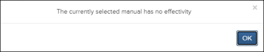
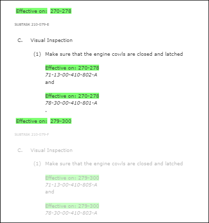
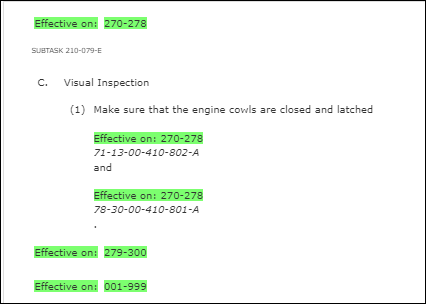
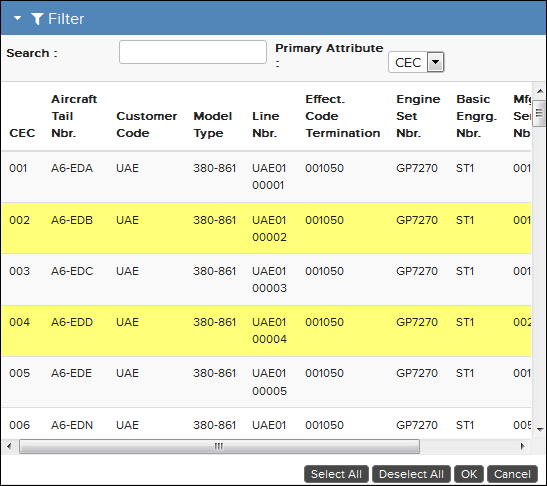
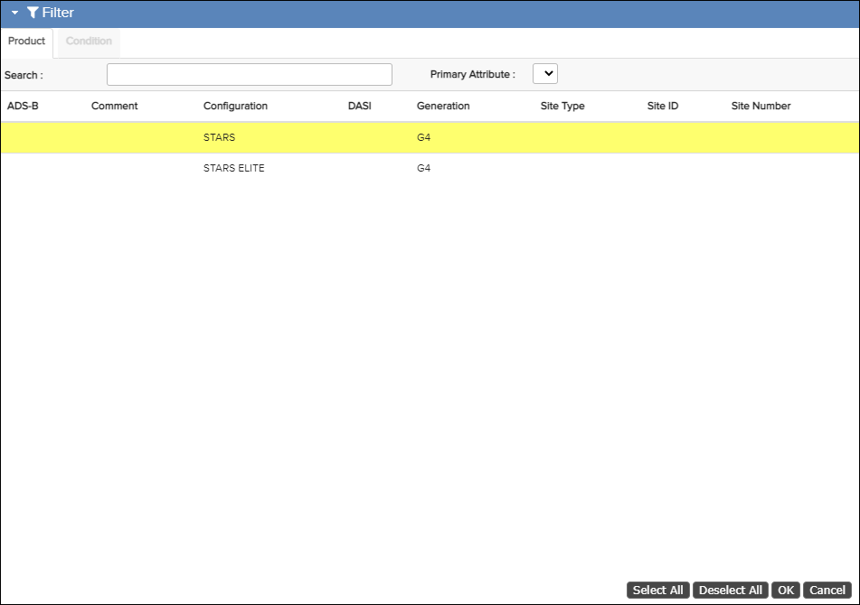
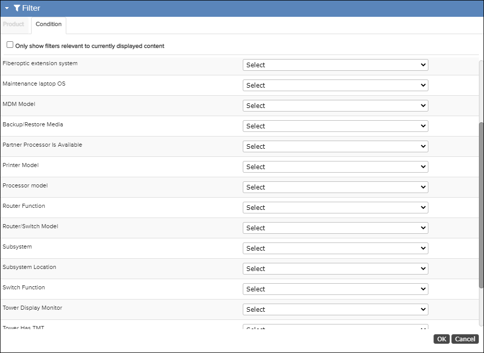

- If the content being viewed has more than one applicability/effectivity filter applied
to the publication and you select a filter, the content not applicable for the selected
filter is either displayed (grayed out) or suppressed (hidden).Note: In publications with multiple applicability/effectivity filters applied, the Toggle Filtered ContentThese are examples of displayed and suppressed content:
 icon is active only when you select one or more filters.
Click the icon to suppress or display the content that is not applicable for the
selected filter.
icon is active only when you select one or more filters.
Click the icon to suppress or display the content that is not applicable for the
selected filter.
Not Applicable Content - Displayed

Not Applicable Content - Suppressed
- If the content being viewed contains only one applicability or effectivity option and you select a filter, the non-filtered content is suppressed.
- The search results only include results expected from the selected filter.
- Once you select a filter, the TOC does not include content for a node that is not part of the filter.
- If the search result is a different publication within the same folder structure, the effectivity remains active for both the original and new opened publication.
- If the search result is a different publication in a different folder structure, the effectivity is reset for the new folder/new opened publication.
- If the effectivity is not set to ALL, the specific effectivity text displays in the TOC.
The filter information shown and the allowed actions in the panel depends on the data you are filtering. For ATA and A350 data, multiple filters can be selected by clicking on them. There are also buttons for selecting/deselecting all filters below the table.

Filter pane, ATA context
For S1000D data, it is only possible to select one filter.

Filter pane, S1000D context

Condition Tab
When an appropriate selection has been made, the filter is set by clicking on the OK button.
You are then redirected back to the publication and the parts that do not apply to the model (or models) appear either grayed out on the screen (ATA context) or they are completely hidden (S1000D context). The selected filter is also displayed as a rolling text in the top Action Bar next to the Filter icon.
Your administrator can apply effectivity filters for Airframe and Engine publications when they are published with a KCA builder in Data Manager. Administrators, refer to the specific KCA builder in the Flatirons Data Manager User Guide.
- If a publication has effectivity selected, only the effectivity list for that publication displays.
- If a publication has no effectivity set, an empty effectivity list displays or a pop-up message appears indicating there is no effectivity for the publication.
- If you navigate to another publication with the same category, the selected effectivity applies to the new publication.
- If you navigate to another publication with the same category, but the new publication does not contain the product selected, a pop-up message prompts you to select a different effectivity.
- If you navigate to another publication with a different effectivity category, a pop-up message prompts if you want to proceed with the selected publication.
The table that follows describes various components in the Filter pane.
| Component | Description |
|---|---|
| Product tab Note: Only for
S1000D
|
Allows you to see the Search and Primary Attribute fields. |
| Condition tab Note: Only for
S1000D
|
Allows you to see a list of conditions and for each you can select a single value or not filter based on this condition. |
| Search | Free text search filter. Covers all columns and performs a continuous search while you are typing. |
| Primary Attribute | Displays the primary attribute for filtering the content. The primary attribute depends on the filter configuration for the data viewed. For aircraft data it is typically CEC in an ATA context and MSNBR, Shipnumber, Modelmark or Tailnumber in an S1000D context. |
| Filter table |
The table lists all filters available for the selected publication. All columns can be sorted by clicking on the column header. One or several filters can be selected by clicking on them in the table. When a filter is selected it is highlighted (yellow). For some data types (ATA and A350) you can also use Select All or Deselect All buttons below the table. |
| Select All | Select all filters in the table. (Only visible for ATA and A350 data) |
| Deselect All | Deselect all filters in the table. (Only visible for ATA and A350 data) |
| OK | Click this button to activate a selected filter. |
| Cancel | Cancel the operation and return to the publication. |